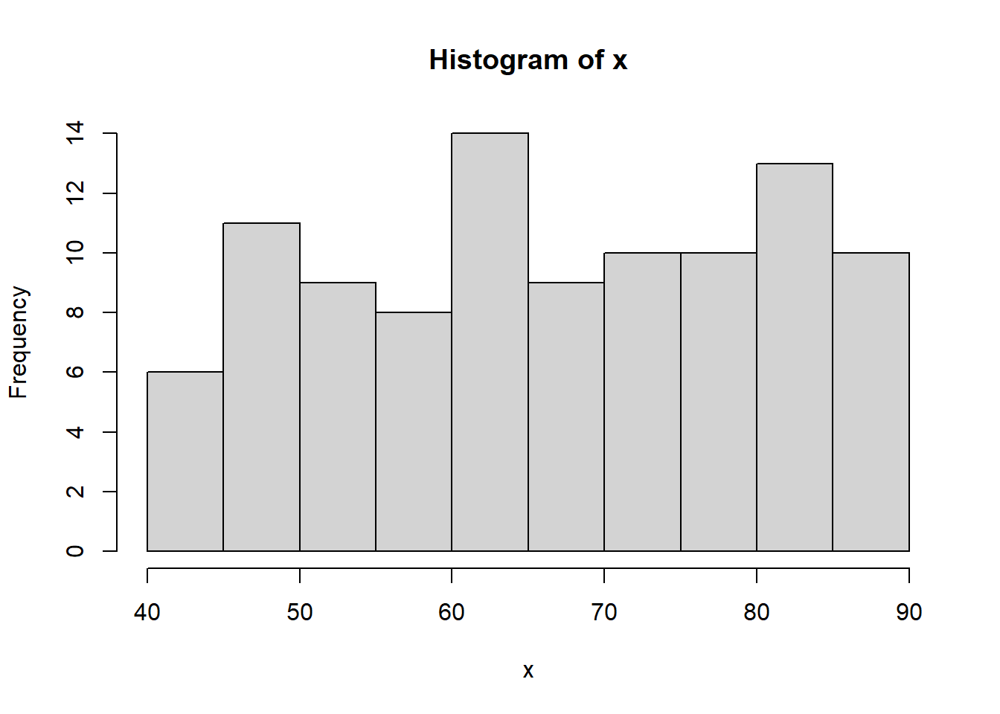
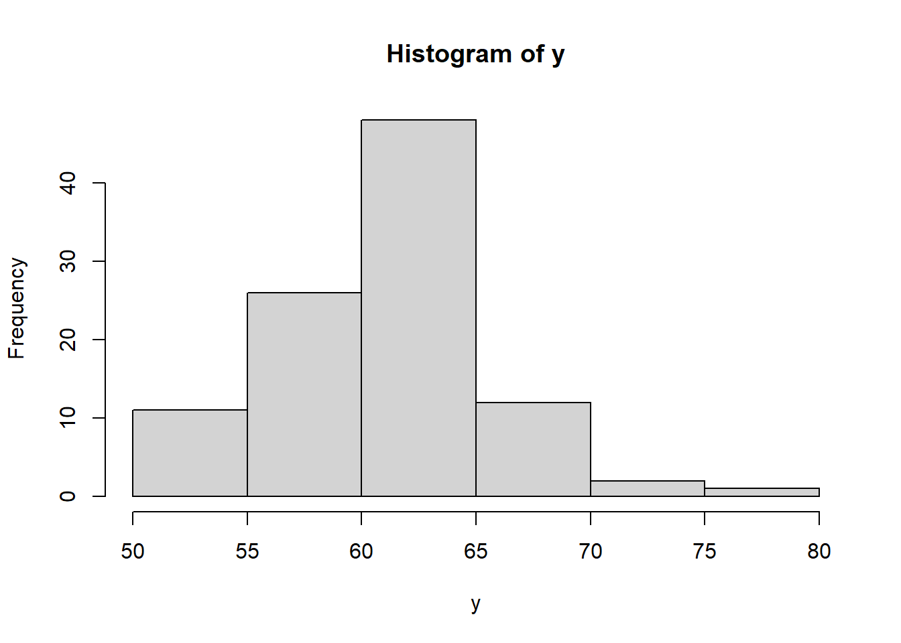
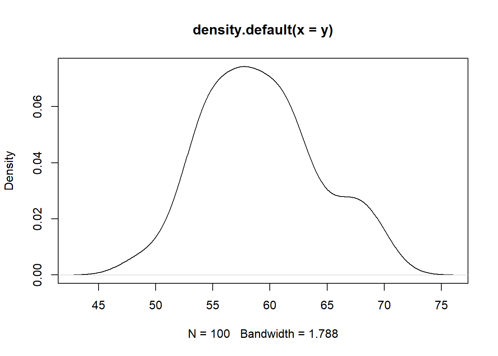
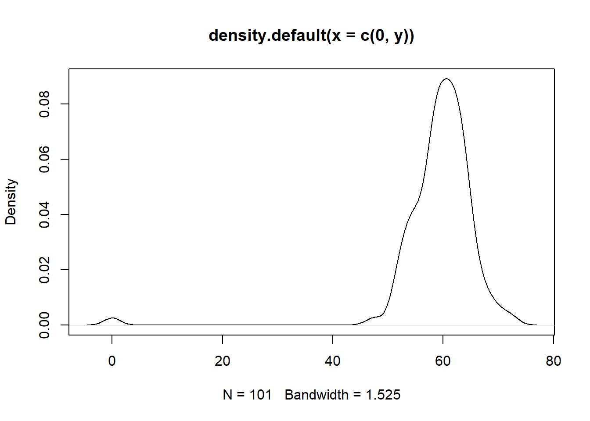
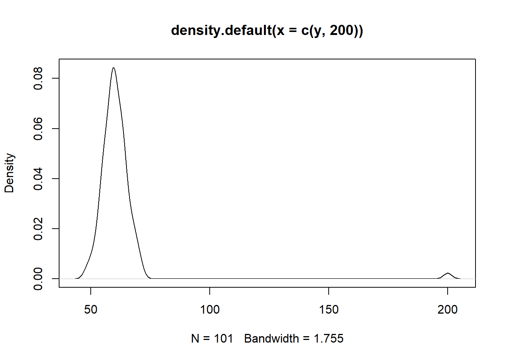
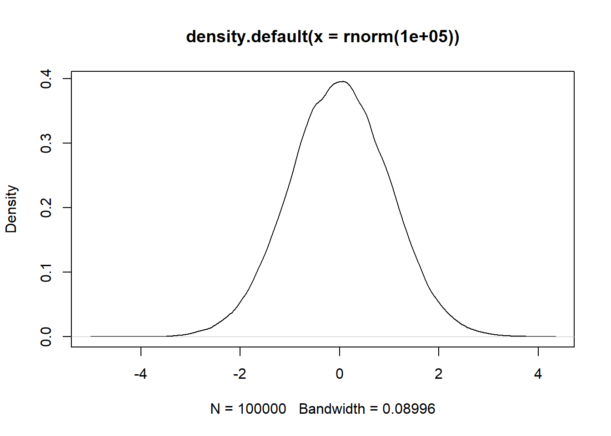

1 Tema 1: Estadística Descriptiva
1.1 Introducción
El arte de contar una historia con datos \(X=\{2,3,4,5,6,71,3,5,7 \}\)
1.2 Tipos de datos
- Cualitativos (cualidades). Nominales, ordinales
- Cuantitativos (cantidad)
1.3 Visualización
1.4 Medidas de tendencia central
## [1] 65.22284## [1] 40.53629 41.56147 41.56661
## [4] 41.89026 42.63837 44.14236
## [7] 44.26118 44.99543 45.97036
## [10] 46.29390 48.48707 49.20949
## [13] 49.57008 49.70331 49.83251
## [16] 50.15322 50.17708 50.36654
## [19] 50.99117 52.19885 52.56064
## [22] 53.08848 53.10937 53.14434
## [25] 53.17534 53.65341 54.33119
## [28] 54.71639 55.56587 55.89558
## [31] 56.47829 57.34367 59.19781
## [34] 59.92467 59.97692 60.01330
## [37] 60.31841 60.40310 60.57347
## [40] 60.91162 61.04807 61.35420
## [43] 62.39025 63.03315 63.33995
## [46] 63.34989 63.79627 64.45352
## [49] 64.55268 65.52548 65.79055
## [52] 65.86373 65.89067 65.91541
## [55] 66.53162 66.61834 66.85058
## [58] 66.98713 68.03921 68.49012
## [61] 68.89684 69.10523 69.30272
## [64] 69.92808 70.14094 70.27423
## [67] 71.08889 71.66844 72.24628
## [70] 72.97623 73.36670 73.40406
## [73] 74.49100 75.07844 75.59900
## [76] 75.72304 76.59792 76.91264
## [79] 77.33179 77.94304 78.51352
## [82] 78.82772 81.51780 82.23835
## [85] 82.98165 82.98413 83.48722
## [88] 83.91540 84.18697 84.23373
## [91] 84.48003 85.88467 85.91204
## [94] 85.96270 86.07854 87.29101
## [97] 87.38502 87.71676 87.91104
## [100] 89.95169## [1] 65.65802
1.5 Medidas de dispersión

## [1] 13.44409## [1] 5.0985731.6 Medidas de forma
Asimetría




Kurtosis
par(mfrow=c(1,3))
plot(density(rnorm(100000,sd=0.5)),xlim=c(-5,5),ylim=c(0,0.8))
plot(density(rnorm(100000)),xlim=c(-5,5),ylim=c(0,0.8))
plot(density(runif(100000)))